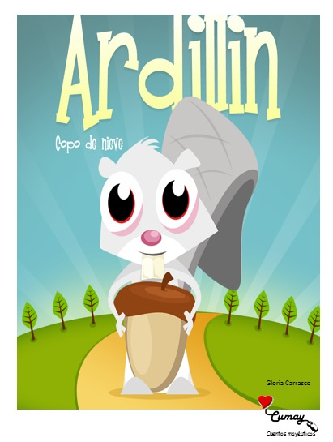

♥
Autoestima
Ser distinto no es un problema: es lo que te hace único. Cada personaje aprende a quererse como es.
📖 Libros de papel · Sin pantallas
Cumay crea libros físicos e interactivos, diseñados por una psicóloga, para que los niños jueguen, pregunten y descubran lo valiosos que son. Con un mensaje positivo en cada página.

¿Qué es un cuento mayéutico?
La mayéutica es el arte de “dar a luz” ideas a través de preguntas. Un cuento mayéutico no entrega todas las respuestas: acompaña al niño a encontrarlas por sí mismo.
Cada cuento Cumay incluye momentos para detenerse, mirar, tocar, preguntar y conversar en familia. Así la lectura se vuelve un juego compartido y no una pantalla más.
¿Qué crees que sintió Ardillín cuando todos lo miraron distinto?
Toca para otra pregunta ↻Lo que cada cuento deja
Ser distinto no es un problema: es lo que te hace único. Cada personaje aprende a quererse como es.
Poner nombre a lo que sentimos —alegría, miedo, enojo, tristeza— es el primer paso para manejarlo.
Solapas, texturas y actividades para que el cuerpo también lea. Las manos aprenden con la historia.
Un libro físico invita a sentarse juntos, sin notificaciones, y a crear recuerdos alrededor de la lectura.
Cómo se lee un cuento Cumay
Lean la historia juntos, página a página. Los personajes cuentan situaciones que los niños reconocen en su día a día.
En cada pausa hay algo para hacer: tocar, buscar, dibujar, imaginar. El niño deja de ser espectador y pasa a ser protagonista.
Las preguntas mayéuticas abren la charla. No hay respuestas correctas: solo ideas propias que merecen ser escuchadas.
El primer cuento
Ardillín es una ardillita blanca de grandes ojos que carga con una bellota casi más grande que ella. En su camino entre colinas y árboles descubrirá que lo que parece diferente puede ser, justamente, su mayor tesoro.
La colección crece
Copo de nieve
Primer cuentoSe está escribiendo…
ProntoSe está dibujando…
ProntoDéjanos tu correo y te contamos cuando los cuentos estén listos.